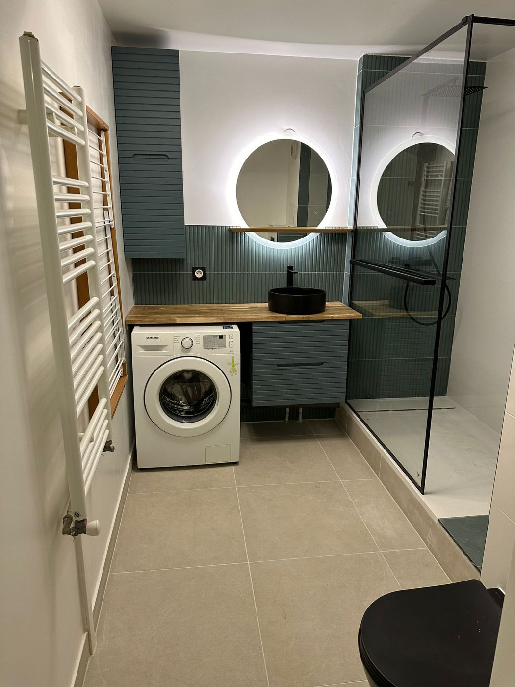
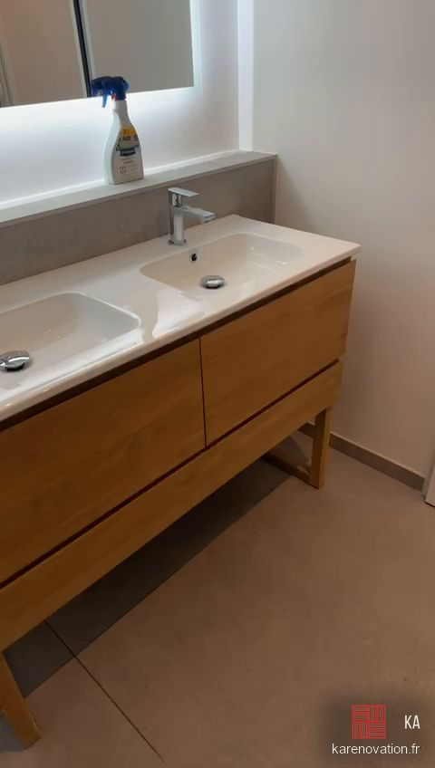
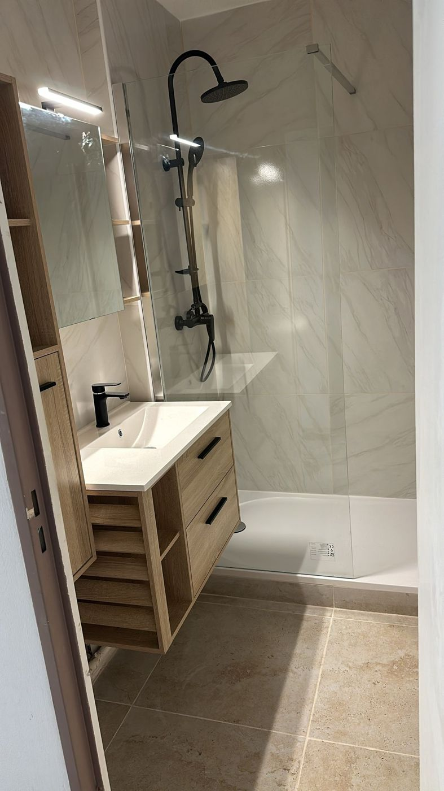
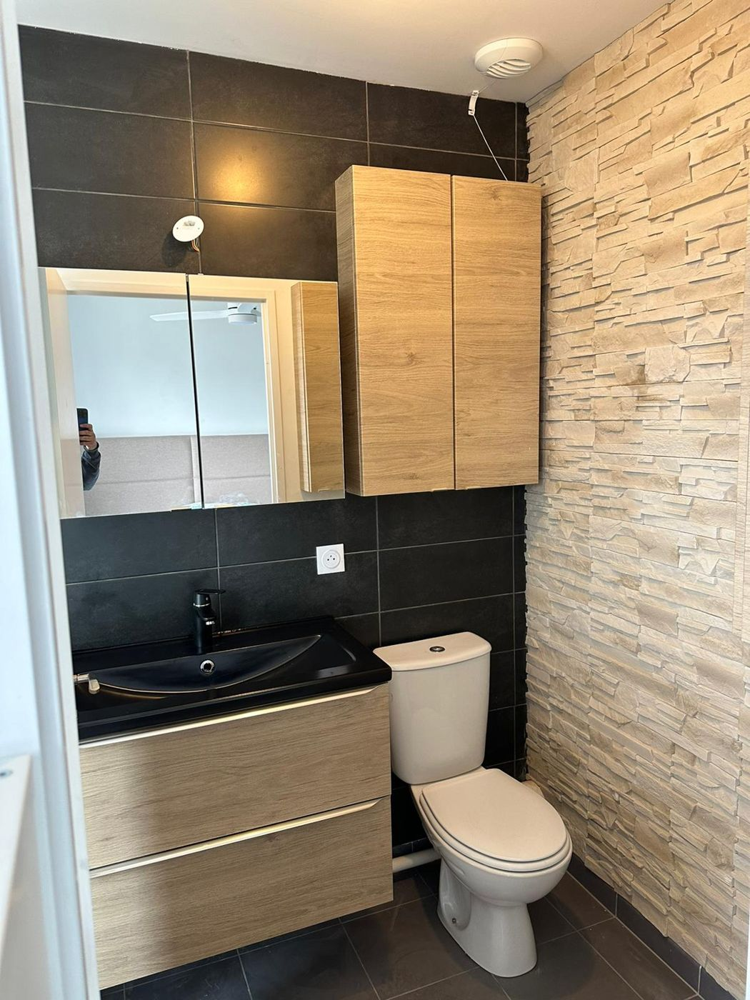

Accueil · Poissy
Poissy · YvelinesRénovation de salle de bain à Poissy
Douche à l'italienne, remplacement de baignoire, WC suspendu, carrelage : votre artisan rénove votre salle de bain à Poissy, de la démolition à la dernière finition.
Votre artisan salle de bain à Poissy
Nous intervenons à Poissy pour la rénovation de salles de bain et la création de douches à l'italienne, du centre ancien aux quartiers résidentiels.
Dans les immeubles du centre-ville, les salles de bain sont souvent petites et mal agencées : remplacer la baignoire par une douche extra-plate, suspendre le WC et le meuble vasque change complètement l'espace. En maison, nous profitons souvent des travaux pour revoir l'éclairage et la ventilation.
Carreleur à Poissy
Pour votre salle de bain à Poissy, nous posons carrelage et faïence : grands formats, mosaïque, douche à l'italienne carrelée. Le support est préparé avant la pose : ragréage, placo hydrofuge et étanchéité sous la douche.
Plombier salle de bain à Poissy
Arrivées d'eau, évacuations, WC suspendu, douche, baignoire et robinetterie : votre plombier salle de bain à Poissy reprend les réseaux avant de refermer les murs, pour une pièce sans mauvaise surprise.
Plaquiste à Poissy
Cloisons, doublages, coffrages et faux plafonds en placo hydrofuge : nous préparons des murs droits et adaptés à l'humidité, prêts pour le carrelage ou la peinture.
Électricien salle de bain à Poissy
Prises, éclairage, spots, miroir lumineux, sèche-serviettes et VMC : nous refaisons l'électricité de votre salle de bain à Poissy en respectant les zones de sécurité autour de l'eau.
Douche à l'italienne à Poissy
Remplacer la baignoire ou l'ancienne cabine par une douche de plain-pied : évacuation reprise, étanchéité, receveur extra-plat ou douche carrelée, paroi vitrée.
Tous les métiers de la salle de bain à Poissy
Vous cherchez un carreleur, un plombier ou une entreprise pour refaire votre salle de bain à Poissy ? KA Rénovation réunit tous ces métiers : plomberie, carrelage et faïence, placo, faux plafond, électricité, et aussi peinture, sol PVC, portes et isolation. Votre artisan salle de bain s'occupe de tout, de la démolition à la dernière finition.
Douche à l'italienne, remplacement de baignoire par une douche, rénovation complète clé en main : demandez votre devis de rénovation de salle de bain à Poissy, la visite est gratuite.
Nos travaux de salle de bain
- Création de douche à l'italienne, receveur extra-plat ou carrelé
- Remplacement de baignoire par une douche
- Pose de WC suspendu et bâti-support
- Plomberie : arrivées d'eau, évacuations, robinetterie
- Électricité : prises, éclairage, spots, VMC
- Placo hydrofuge, faux plafond, carrelage et faïence
- Meubles vasque, miroirs lumineux, sèche-serviettes
Comment se passe votre projet
Envoyez-nous quelques photos de votre salle de bain pour une première estimation. Nous fixons ensuite un rendez-vous à Poissy pour voir la pièce et établir un devis gratuit, détaillé ligne par ligne.
Une rénovation complète prend en moyenne une à deux semaines. Nous protégeons les lieux, évacuons les gravats et rendons une pièce propre, prête à vivre.



Questions fréquentes
Intervenez-vous à Poissy ?
Oui, Poissy fait partie de notre zone d'intervention : nous travaillons dans toute l'Île-de-France depuis Chanteloup-les-Vignes. La visite et le devis sont gratuits.
Quelle entreprise pour refaire sa salle de bain à Poissy ?
KA Rénovation, votre artisan salle de bain à Poissy : plomberie, électricité, placo et carrelage sont faits par la même équipe, sur un seul devis.
Cherchez-vous un carreleur ou un plombier à Poissy ?
Pour votre salle de bain à Poissy, nous faisons les deux, et aussi le placo et l'électricité : un seul devis, une seule équipe, du début à la fin.
Combien de temps durent les travaux ?
En moyenne une à deux semaines pour une rénovation complète avec création d'une douche à l'italienne, selon l'ampleur des travaux.
Le devis est-il gratuit ?
Oui. Vos photos permettent une première estimation, puis nous venons sur place pour un devis précis, sans engagement.
Devis gratuit après visite sur place. Envoyez-nous quelques photos de votre pièce pour une première estimation, puis nous fixons ensemble un rendez-vous.
Envoyer mes photos Appeler le 07 63 14 76 27Nos autres prestations
Nos conseils
Nous intervenons aussi à
Parlons de
votre salle de bain.
Envoyez-nous des photos de votre pièce pour une première estimation, puis on fixe ensemble un rendez-vous pour le devis sur place.
07 63 14 76 27Fermé le dimanche
depuis Chanteloup-les-Vignes (78)